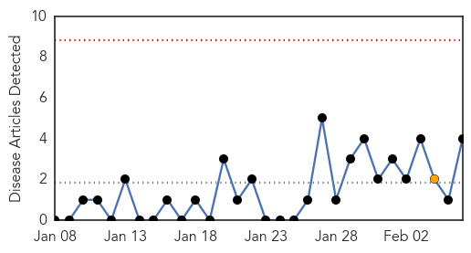
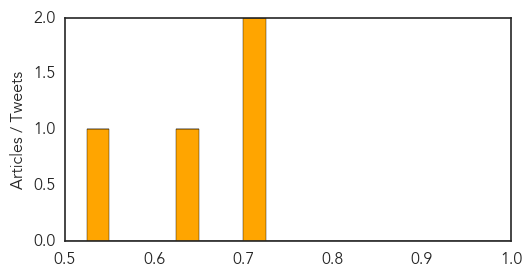

Pertussis
30-Day Web Trend
0 alerts, 1 warnings

30-Day Twitter Trend
0 alerts, 0 warnings

Article Locations
Article Confidences
Top Articles:
Top Tweets:
-
No tweets found for Feb 06, 2015
Meningitis
30-Day Web Trend
0 alerts, 0 warnings

30-Day Twitter Trend
0 alerts, 0 warnings

Article Locations

Article Confidences

Top Articles:
- 0.962
- Providence College: Probable 2nd meningococcal meningitis case
- 0.942
- Yale student hospitalized with probable bacterial meningitis
- 0.912
- Meningitis information sent to Island doctors, clinics
- 0.887
- Yale student admitted to hospital with probable bacterial mening
- 0.690
- Meningitis at Guilford College: Viral or bacterial?
- 0.661
- Health officials say 2nd college student may have meningitis
- 0.609
- Letter: Women have a voice in meningitis vaccine
Top Tweets:
-
No tweets found for Feb 06, 2015